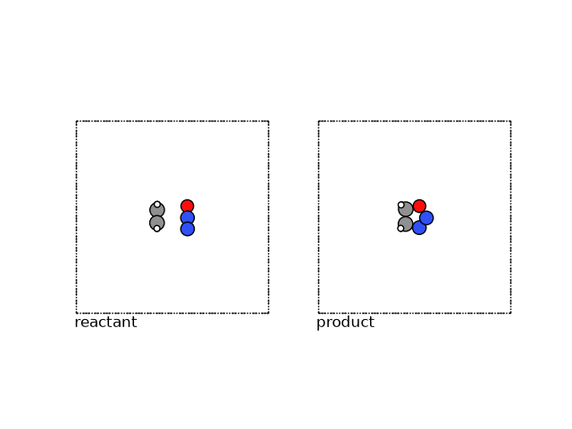

Note
Go to the end to download the full example code.
Finding Reaction Paths with eOn and a Metatomic Potential¶
- Authors:
Rohit Goswami @HaoZeke, Hanna Tuerk @HannaTuerk, Arslan Mazitov @abmazitov, Michele Ceriotti @ceriottim
This example finds a reaction path for oxadiazole formation from N₂O and
ethylene with the PET-MAD metatomic model. Energies and
forces come from that model under two drivers: a climbing-image NEB in the
atomic simulation environment (ASE), and an energy-weighted NEB with
optional off-path climbing steps (OCI / MMF) in eOn via pyeonclient.
Outline:
Export PET-MAD and load it for ASE and for eOn (
make_backend("rgpot_metatomic", model_path=…)).Build an IDPP guess and run a short ASE climbing-image NEB.
Run eOn
NudgedElasticBandwith energy-weighted springs and MMF (NebSpec), then plot the path.Relax the endpoints with the same potential and check ordering with IRA.
import os
from contextlib import chdir
from pathlib import Path
import ase.io as aseio
import ira_mod
import matplotlib.image as mpimg
import matplotlib.pyplot as plt
import numpy as np
import pyeonclient as pyec
import readcon
from ase.mep import NEB
from ase.optimize import LBFGS
from ase.visualize import view
from ase.visualize.plot import plot_atoms
from atomistic_cookbook_utils import run_command
from pyeonclient.backends import make_backend, make_metatomic_ase_calculator
from pyeonclient.models import NebSpec, PathInit
from rgpycrumbs.eon import plot_min, plot_neb
os.environ.setdefault("MPLBACKEND", "Agg")
# sphinx_gallery_thumbnail_number = 4
def write_con(path, atoms_or_list):
"""ASE → ``.con`` via readcon (for plot tools / on-disk export)."""
path = Path(path)
items = (
atoms_or_list if isinstance(atoms_or_list, (list, tuple)) else [atoms_or_list]
)
frames = [readcon.ConFrame.from_ase(atoms) for atoms in items]
readcon.write_con(str(path), frames)
return path
def show_png(path: str, *, figsize=(10, 8)) -> None:
"""Display a saved plot PNG in the sphinx-gallery page."""
fig, ax = plt.subplots(figsize=figsize)
ax.imshow(mpimg.imread(path))
ax.axis("off")
fig.tight_layout(pad=0.15)
plt.show()
/home/runner/work/atomistic-cookbook/atomistic-cookbook/.nox/eon-pet-neb/lib/python3.13/site-packages/rgpycrumbs/eon/plt_min.py:47: UserWarning: rgpycrumbs.eon.plt_min is a dispatched PEP 723 script. Direct imports bypass the normal rgpycrumbs dispatcher path and its dependency-resolution setup. Prefer `rgpycrumbs eon plt-min` or `uv run <script>.py`. If you intentionally import this module directly, set RGPYCRUMBS_AUTO_DEPS=1 to allow auto-resolved deps, or RGPYCRUMBS_SUPPRESS_SCRIPT_IMPORT_WARNING=1 to silence this warning.
warn_on_direct_script_import(__name__, "rgpycrumbs eon plt-min")
Obtaining the Foundation Model - PET-MAD¶
PET-MAD is a point-edge transformer trained on the
MAD dataset [1]. Equivariance is
learned from data rather than hard-wired into the architecture, which
leaves a wider design space for the model. Energies and forces are
evaluated through metatomic [2] (built on metatensor): export
weights from HuggingFace, load them, then call the
engine of choice.
repo_id = "lab-cosmo/upet"
tag = "v1.5.0"
url_path = f"models/pet-mad-xs-{tag}.ckpt"
fname = Path(f"models/pet-mad-xs-{tag}.pt")
url = f"https://huggingface.co/{repo_id}/resolve/main/{url_path}"
fname.parent.mkdir(parents=True, exist_ok=True)
run_command(f"mtt export {url} -o {fname}")
# Absolute path once, before any chdir (endpoint movies under min_*/).
model_path = str(fname.resolve())
print(f"Successfully exported {fname} ({model_path}).")
Successfully exported models/pet-mad-xs-v1.5.0.pt (/home/runner/work/atomistic-cookbook/atomistic-cookbook/examples/eon-pet-neb/models/pet-mad-xs-v1.5.0.pt).
Nudged Elastic Band (NEB)¶
Given two known configurations on a potential energy surface (PES), often one wishes to determine the path of highest probability between the two. Under the harmonic approximation to transition state theory, connecting the configurations (each point representing a full molecular structure) by a discrete set of images allows one to evolve the path under an optimization algorithm, and allows approximating the reaction to three states: the reactant, product, and transition state.
The location of this transition state (≈ the point with the highest energy along this path) determines the barrier height of the reaction. This saddle point can be found by transforming the second derivatives (Hessian) to step along the softest mode. However, an approximation which is free from explicitly finding this mode involves moving the highest image of a NEB path: the “climbing” image.
Mathematically, the saddle point has zero first derivatives and a single negative eigenvalue. The climbing image technique moves the highest energy image along the reversed NEB tangent force, avoiding the cost of full Hessian diagonalization used in single-ended methods [3].
The reactant and product here are N₂O and ethylene forming oxadiazole.
reactant = aseio.read("data/min_reactant.con")
product = aseio.read("data/min_product.con")
We can visualize these structures using ASE.
fig, (ax1, ax2) = plt.subplots(1, 2)
plot_atoms(reactant, ax1, rotation=("-90x,0y,0z"))
plot_atoms(product, ax2, rotation=("-90x,0y,0z"))
ax1.text(0.3, -1, "reactant")
ax2.text(0.3, -1, "product")
ax1.set_axis_off()
ax2.set_axis_off()

Initial path (IDPP)¶
Endpoints above are already minimized; relaxation with eOn is shown at the
end. An NEB needs an initial band. Linear interpolation can break bonds or
pass atoms through each other; a common fix is to refine the band on a cheap
surrogate such as the image-dependent pair potential (IDPP) [5] (bond-length
surface). ASE’s IDPP initializer is used here; eOn builds its own path later
with neb_idpp_path. See also the
ASE tutorial.
Too many images kink the band; too few under-resolve the tangent.
N_INTERMEDIATE_IMGS = 10
Running NEBs¶
ASE climbing-image NEB¶
Short ASE + metatomic calculator run on the same PET-MAD export (comparison only; full convergence on this system needs many more steps).
def mk_mta_calc():
"""ASE calculator for the ASE-half NEB (same model file as eOn)."""
return make_metatomic_ase_calculator(
fname,
device="cpu",
non_conservative=False,
uncertainty_threshold=0.001,
)
ipath = [reactant] + [reactant.copy() for _ in range(N_INTERMEDIATE_IMGS)] + [product]
for img in ipath:
img.calc = mk_mta_calc()
print(img.calc._model.capabilities().outputs)
neb = NEB(ipath, climb=True, k=5, method="improvedtangent")
neb.interpolate("idpp")
initial_energies = np.array([img.get_potential_energy() for img in ipath])
optimizer = LBFGS(neb, trajectory="A2B.traj", logfile="opt.log")
conv = optimizer.run(fmax=0.01, steps=100)
print("ASE NEB converged:", conv)
final_energies = np.array([img.get_potential_energy() for img in ipath])
plt.figure(figsize=(8, 6))
plt.plot(
initial_energies - initial_energies[0],
"o-",
label="Initial path (IDPP)",
color="xkcd:blue",
)
plt.plot(
final_energies - initial_energies[0],
"o-",
label="After 100 LBFGS steps",
color="xkcd:orange",
)
plt.xlabel("Image number")
plt.ylabel("Potential energy (eV)")
plt.legend()
plt.grid(True, alpha=0.3)
plt.title("ASE NEB path evolution")
plt.show()

/home/runner/work/atomistic-cookbook/atomistic-cookbook/.nox/eon-pet-neb/lib/python3.13/site-packages/pyeonclient/backends.py:95: UserWarning: the 'non_conservative_forces' output name is deprecated, please update the model to use 'non_conservative_force' instead
return AtomisticModel(model, model.metadata(), model.capabilities())
/home/runner/work/atomistic-cookbook/atomistic-cookbook/.nox/eon-pet-neb/lib/python3.13/site-packages/pyeonclient/backends.py:95: UserWarning: the 'non_conservative_forces' output name is deprecated, please update the model to use 'non_conservative_force' instead
return AtomisticModel(model, model.metadata(), model.capabilities())
/home/runner/work/atomistic-cookbook/atomistic-cookbook/.nox/eon-pet-neb/lib/python3.13/site-packages/pyeonclient/backends.py:95: UserWarning: the 'non_conservative_forces' output name is deprecated, please update the model to use 'non_conservative_force' instead
return AtomisticModel(model, model.metadata(), model.capabilities())
/home/runner/work/atomistic-cookbook/atomistic-cookbook/.nox/eon-pet-neb/lib/python3.13/site-packages/pyeonclient/backends.py:95: UserWarning: the 'non_conservative_forces' output name is deprecated, please update the model to use 'non_conservative_force' instead
return AtomisticModel(model, model.metadata(), model.capabilities())
/home/runner/work/atomistic-cookbook/atomistic-cookbook/.nox/eon-pet-neb/lib/python3.13/site-packages/pyeonclient/backends.py:95: UserWarning: the 'non_conservative_forces' output name is deprecated, please update the model to use 'non_conservative_force' instead
return AtomisticModel(model, model.metadata(), model.capabilities())
/home/runner/work/atomistic-cookbook/atomistic-cookbook/.nox/eon-pet-neb/lib/python3.13/site-packages/pyeonclient/backends.py:95: UserWarning: the 'non_conservative_forces' output name is deprecated, please update the model to use 'non_conservative_force' instead
return AtomisticModel(model, model.metadata(), model.capabilities())
/home/runner/work/atomistic-cookbook/atomistic-cookbook/.nox/eon-pet-neb/lib/python3.13/site-packages/pyeonclient/backends.py:95: UserWarning: the 'non_conservative_forces' output name is deprecated, please update the model to use 'non_conservative_force' instead
return AtomisticModel(model, model.metadata(), model.capabilities())
/home/runner/work/atomistic-cookbook/atomistic-cookbook/.nox/eon-pet-neb/lib/python3.13/site-packages/pyeonclient/backends.py:95: UserWarning: the 'non_conservative_forces' output name is deprecated, please update the model to use 'non_conservative_force' instead
return AtomisticModel(model, model.metadata(), model.capabilities())
/home/runner/work/atomistic-cookbook/atomistic-cookbook/.nox/eon-pet-neb/lib/python3.13/site-packages/pyeonclient/backends.py:95: UserWarning: the 'non_conservative_forces' output name is deprecated, please update the model to use 'non_conservative_force' instead
return AtomisticModel(model, model.metadata(), model.capabilities())
/home/runner/work/atomistic-cookbook/atomistic-cookbook/.nox/eon-pet-neb/lib/python3.13/site-packages/pyeonclient/backends.py:95: UserWarning: the 'non_conservative_forces' output name is deprecated, please update the model to use 'non_conservative_force' instead
return AtomisticModel(model, model.metadata(), model.capabilities())
/home/runner/work/atomistic-cookbook/atomistic-cookbook/.nox/eon-pet-neb/lib/python3.13/site-packages/pyeonclient/backends.py:95: UserWarning: the 'non_conservative_forces' output name is deprecated, please update the model to use 'non_conservative_force' instead
return AtomisticModel(model, model.metadata(), model.capabilities())
/home/runner/work/atomistic-cookbook/atomistic-cookbook/.nox/eon-pet-neb/lib/python3.13/site-packages/pyeonclient/backends.py:95: UserWarning: the 'non_conservative_forces' output name is deprecated, please update the model to use 'non_conservative_force' instead
return AtomisticModel(model, model.metadata(), model.capabilities())
{'feature': <torch.ScriptObject object at 0x560315d25c80>, 'features': <torch.ScriptObject object at 0x56031b361740>, 'mtt::aux::cutoff_stats': <torch.ScriptObject object at 0x5603174608b0>, 'energy': <torch.ScriptObject object at 0x56031c100ee0>, 'mtt::aux::energy_last_layer_features': <torch.ScriptObject object at 0x56031c101850>, 'non_conservative_forces': <torch.ScriptObject object at 0x56031c1018b0>, 'non_conservative_force': <torch.ScriptObject object at 0x56031c100e60>, 'mtt::aux::non_conservative_forces_last_layer_features': <torch.ScriptObject object at 0x560317e9fe70>, 'non_conservative_stress': <torch.ScriptObject object at 0x56031c0b8ab0>, 'mtt::aux::non_conservative_stress_last_layer_features': <torch.ScriptObject object at 0x56031c100f00>, 'energy_uncertainty': <torch.ScriptObject object at 0x5603186192d0>, 'mtt::aux::non_conservative_forces_uncertainty': <torch.ScriptObject object at 0x56031abb5230>, 'mtt::aux::non_conservative_stress_uncertainty': <torch.ScriptObject object at 0x5603186180a0>, 'energy_ensemble': <torch.ScriptObject object at 0x5603132d29f0>}
/home/runner/work/atomistic-cookbook/atomistic-cookbook/.nox/eon-pet-neb/lib/python3.13/site-packages/ase/calculators/calculator.py:517: UserWarning: Some of the atomic energy uncertainties are larger than the threshold of 0.001 eV. The prediction is above the threshold for atoms [0 1 2 3 4 5 6 7 8].
self.calculate(atoms, [name], system_changes)
ASE NEB converged: False
After 100 LBFGS steps the band has not converged. PET-MAD v1.5.0 also reports large LLPR energy uncertainties on some images. The next section uses the same model with eOn’s energy-weighted NEB and OCI-MMF refinements.
eOn and Metatomic¶
With eOn through pyeonclient, geometries are
Matter objects driven by a registered potential.
Thread-safe empirical pots can share one instance across images; ML backends
such as metatomic typically set needsPerImageInstance() so NEB clones
the potential per image and evaluates forces in parallel when
[Main] parallel is on (the default). Paths start from linear
interpolation, IDPP [5], or sequential IDPP (SIDPP) [8] via
neb_idpp_path and related helpers. This run uses energy-weighted springs
and off-path climbing-image NEB (OCINEB) with minimum-mode following [6]:
Energy-weighted springs — larger spring constants near the climb.
OCINEB — dimer-style off-path refinement at the climbing image when the band force drops below a threshold [6].
write_movies=True records every NEB iteration as neb_NNN.dat /
neb_path_NNN.con so the full band evolution is available for the
profile plot below (initial IDPP on the true PES is step 0; the converged
band is the last file).
Load PET-MAD with make_backend("rgpot_metatomic", ...) and set NEB
options with NebSpec on a shared Parameters object.
neb_spec = NebSpec(
n_images=N_INTERMEDIATE_IMGS,
path_init=PathInit.idpp,
energy_weighted=True,
ci_mmf=True,
max_iterations=1000,
force_tolerance=0.01,
max_move=0.1,
write_movies=True,
random_seed=706253457,
)
params = pyec.Parameters()
params.job = pyec.JobType.Nudged_Elastic_Band
neb_spec.apply_to_parameters(params)
pot = make_backend(
"rgpot_metatomic",
model_path=model_path,
device="cpu",
params=params,
)
initial = pyec.from_ase(reactant, pot, params)
final = pyec.from_ase(product, pot, params)
path = pyec.neb_idpp_path(initial, final, N_INTERMEDIATE_IMGS, params)
neb = pyec.NudgedElasticBand(path, params, pot)
f0 = pyec.pot_registry_total_force_calls()
status = neb.compute()
f_neb = pyec.pot_registry_total_force_calls() - f0
if status == pyec.NEBStatus.GOOD:
neb.find_extrema()
written = pyec.write_neb_results(neb, params, f_neb)
energies = np.array([neb.image_energy(i) for i in range(neb.n_path)])
e_react = float(energies[0])
print("NEB status:", status, " force_calls:", f_neb)
print(f"E_ref = {neb.energy_reference:.6f} eV, n_path = {neb.n_path}")
print("ΔE vs reactant (eV):", np.round(energies - e_react, 4))
if neb.num_extrema:
print("extrema positions:", list(neb.extremum_positions)[: neb.num_extrema])
print("written:", written)
NEB status: NEBStatus.GOOD force_calls: 4103
E_ref = -57.278324 eV, n_path = 12
ΔE vs reactant (eV): [ 0. -0.0138 -0.04 -0.0334 -0.0292 0.0092 0.3818 0.8757 0.6955
0.1062 -0.7627 -0.7311]
extrema positions: [0.41360707811868325, 1.0485704091793748, 2.0205020690096265, 3.2045518060464606, 3.561176111338085, 4.126460589864404, 4.454518309426009, 6.999890909372607, 10.346759910474923]
written: ['results.dat', 'neb.con', 'sp.con', 'peak00_pos.con', 'peak00_mode.dat', 'neb.dat']
Visual interpretation¶
write_movies leaves neb_NNN.dat for every optimizer step. Plot the
full band evolution (1D) and the reaction-valley landscape (2D) with
rgpycrumbs.eon.plot_neb().
_neb_style = dict(
con_file="neb.con",
figsize=(12, 8),
zoom_ratio=0.35,
show_pts=True,
highlight_last=True,
facecolor="white",
fontsize_base=14,
plot_structures="all",
strip_renderer="xyzrender",
strip_dividers=True,
strip_spacing=2.0,
xyzrender_config="paton",
rotation="90x,0y,0z",
show_legend=True,
)
# 1D: every neb_NNN.dat overlaid; step 0 = IDPP on PET-MAD, last = converged.
plot_neb(
plot_type="profile",
output_file="1D_oxad.png",
title="NEB Path Optimization",
**_neb_style,
)
show_png("1D_oxad.png")


[08/24/26 21:20:45] INFO INFO - Setting global rcParams for ruhi theme
WARNING WARNING - Font 'Atkinson Hyperlegible' not found.
Falling back to 'sans-serif'.
INFO INFO - Reading structures from neb.con
INFO INFO - Loaded 12 structures.
INFO INFO - Loading explicit saddle point from sp.con
INFO INFO - Searching for files with pattern:
'neb_*.dat'
INFO INFO - Found 63 file(s).
[08/24/26 21:20:46] INFO INFO - rgpycrumbs: installing xyzrender>=0.1.3 via
uv
[08/24/26 21:20:48] INFO INFO - Loading /tmp/tmpdvq6vbwi.xyz
INFO INFO - Built graph: 9 atoms, 7 bonds
[08/24/26 21:20:49] INFO INFO - Loading /tmp/tmpi0dn3yps.xyz
INFO INFO - Built graph: 9 atoms, 7 bonds
[08/24/26 21:20:50] INFO INFO - Loading /tmp/tmpc50ew4r_.xyz
INFO INFO - Built graph: 9 atoms, 7 bonds
[08/24/26 21:20:51] INFO INFO - Loading /tmp/tmpo7t90x34.xyz
INFO INFO - Built graph: 9 atoms, 7 bonds
[08/24/26 21:20:52] INFO INFO - Loading /tmp/tmpeb8i7vhg.xyz
INFO INFO - Built graph: 9 atoms, 7 bonds
[08/24/26 21:20:54] INFO INFO - Loading /tmp/tmpdeym7dh4.xyz
INFO INFO - Built graph: 9 atoms, 7 bonds
[08/24/26 21:20:55] INFO INFO - Loading /tmp/tmp3ohzkaea.xyz
INFO INFO - Built graph: 9 atoms, 7 bonds
[08/24/26 21:20:56] INFO INFO - Loading /tmp/tmpbcj05tw5.xyz
INFO INFO - Built graph: 9 atoms, 7 bonds
[08/24/26 21:20:57] INFO INFO - Loading /tmp/tmpnib3qy8m.xyz
INFO INFO - Built graph: 9 atoms, 9 bonds
[08/24/26 21:20:59] INFO INFO - Loading /tmp/tmp4rcn0hcy.xyz
INFO INFO - Built graph: 9 atoms, 9 bonds
[08/24/26 21:21:00] INFO INFO - Loading /tmp/tmpmyd7t8s5.xyz
INFO INFO - Built graph: 9 atoms, 9 bonds
[08/24/26 21:21:01] INFO INFO - Loading /tmp/tmpsjrmuglf.xyz
INFO INFO - Built graph: 9 atoms, 9 bonds
[08/24/26 21:21:02] INFO INFO - Profile content layout: main=3.55 in,
strip=1.95 in, figsize=(12.00, 6.91)
2D landscape in reaction-valley coordinates [3, 7]: progress along the path and orthogonal deviation from permutation-corrected RMSD to the endpoints (IRA [4]). Energies and projected tangential forces feed a gradient-enhanced inverse multiquadric GP [7]; black dots are configurations evaluated during NEB (see [3, Chapter 4]).
plot_neb(
plot_type="landscape",
output_file="2D_oxad.png",
title="NEB-RMSD Surface",
rc_mode="path",
landscape_mode="surface",
landscape_path="all",
surface_type="grad_imq",
project_path=True,
**_neb_style,
)
show_png("2D_oxad.png")


[08/24/26 21:21:04] INFO INFO - Setting global rcParams for ruhi theme
WARNING WARNING - Font 'Atkinson Hyperlegible' not found.
Falling back to 'sans-serif'.
INFO INFO - Reading structures from neb.con
INFO INFO - Loaded 12 structures.
INFO INFO - Loading explicit saddle point from sp.con
INFO INFO - Searching for files with pattern:
'neb_*.dat'
INFO INFO - Found 63 file(s).
INFO INFO - Searching for files with pattern:
'neb_path_*.con'
INFO INFO - Found 63 file(s).
INFO INFO - Computing Landscape data...
[08/24/26 21:21:05] INFO INFO - Saving Landscape cache to
.neb_landscape.parquet...
INFO INFO - Calculated heuristic RBF smoothing: 0.1126
INFO INFO - Generating 2D surface using grad_imq
(Projected: True)...
INFO INFO - rgpycrumbs: installing jax>=0.4 via uv
[08/24/26 21:21:07] INFO INFO - Unable to initialize backend 'tpu':
INTERNAL: Failed to open libtpu.so: libtpu.so:
cannot open shared object file: No such file or
directory
[08/24/26 21:21:24] INFO INFO - Loading dimer trajectory from .
INFO INFO - Using dimer metrics from frame metadata
(1001 rows)
INFO INFO - Loaded 1001 frames, 1001 data rows
WARNING WARNING - No reactant.con or pos.con found; using
first movie frame
[08/24/26 21:21:25] INFO INFO - Plotted 1001 MMF refinement frame(s)
INFO INFO - Plotting explicit SP at R=0.727, P=0.220
INFO INFO - rgpycrumbs: installing adjustText>=1.0 via
uv
[08/24/26 21:21:26] WARNING WARNING - Looks like you are using a tranform that
doesn't support FancyArrowPatch, using ax.annotate
instead. The arrows might strike through texts.
Increasing shrinkA in arrowprops might help.
INFO INFO - Loading /tmp/tmpv5wndvgr.xyz
INFO INFO - Built graph: 9 atoms, 7 bonds
INFO INFO - Loading /tmp/tmp8_7kry90.xyz
INFO INFO - Built graph: 9 atoms, 7 bonds
[08/24/26 21:21:27] INFO INFO - Loading /tmp/tmpxo212sr3.xyz
INFO INFO - Built graph: 9 atoms, 7 bonds
[08/24/26 21:21:28] INFO INFO - Loading /tmp/tmpfsm5mw6b.xyz
INFO INFO - Built graph: 9 atoms, 7 bonds
[08/24/26 21:21:29] INFO INFO - Loading /tmp/tmp8enz93ig.xyz
INFO INFO - Built graph: 9 atoms, 7 bonds
INFO INFO - Loading /tmp/tmp1dlc1r5s.xyz
INFO INFO - Built graph: 9 atoms, 7 bonds
[08/24/26 21:21:30] INFO INFO - Loading /tmp/tmplekq1d37.xyz
INFO INFO - Built graph: 9 atoms, 7 bonds
[08/24/26 21:21:31] INFO INFO - Loading /tmp/tmpbfbrxch0.xyz
INFO INFO - Built graph: 9 atoms, 7 bonds
[08/24/26 21:21:32] INFO INFO - Loading /tmp/tmpn_8j4ewi.xyz
INFO INFO - Built graph: 9 atoms, 9 bonds
[08/24/26 21:21:33] INFO INFO - Loading /tmp/tmppf3k_yx2.xyz
INFO INFO - Built graph: 9 atoms, 9 bonds
[08/24/26 21:21:34] INFO INFO - Loading /tmp/tmp13zf7mfb.xyz
INFO INFO - Built graph: 9 atoms, 9 bonds
[08/24/26 21:21:35] INFO INFO - Loading /tmp/tmpjsqe3o4t.xyz
INFO INFO - Built graph: 9 atoms, 9 bonds
[08/24/26 21:21:36] INFO INFO - Set 1:1 (s,d) square panel: Δs=Δd=1.336 Å
(s=[-0.049, 1.286], d=[-0.668, 0.668]);
strip_rows=2; figsize=(8.35, 10.48) in
Relaxing the endpoints with eOn¶
The NEB above started from pre-minimized geometries. Here unrelaxed structures are boxed, minimized with the same PET-MAD backend, then checked with IRA.
reactant = aseio.read("data/reactant.con")
product = aseio.read("data/product.con")
def center_cell(atoms):
"""Assign a cubic cell and center (eOn expects a unit cell)."""
atoms.set_cell([20, 20, 20])
atoms.pbc = True
atoms.center()
return atoms
reactant = center_cell(reactant)
product = center_cell(product)
fig, (ax1, ax2) = plt.subplots(1, 2)
plot_atoms(reactant, ax1, rotation=("-90x,0y,0z"))
plot_atoms(product, ax2, rotation=("-90x,0y,0z"))
ax1.text(0.3, -1, "reactant")
ax2.text(0.3, -1, "product")
ax1.set_axis_off()
ax2.set_axis_off()

Run the minimization¶
Matter.relax writes movies under min_reactant/ and min_product/
for the plots below.
params_min = pyec.Parameters()
params_min.job = pyec.JobType.Minimization
params_min.random_seed = 706253457
params_min.opt_max_iterations = 2000
params_min.opt_max_move = 0.1
params_min.opt_converged_force = 0.01
params_min.write_movies = True
pot_min = make_backend(
"rgpot_metatomic",
model_path=model_path,
device="cpu",
params=params_min,
)
dir_reactant = Path("min_reactant")
dir_product = Path("min_product")
dir_reactant.mkdir(exist_ok=True)
dir_product.mkdir(exist_ok=True)
def relax_endpoint(atoms, out_dir: Path):
"""ASE Atoms → Matter.relax → ASE Atoms (movie in *out_dir*)."""
matter = pyec.from_ase(atoms, pot_min, params_min)
with chdir(out_dir):
ok = bool(
matter.relax(
write_movie=True,
prefix_movie="minimization",
prefix_checkpoint="pos",
)
)
print(f"{out_dir.name}: converged={ok}, E = {matter.potential_energy:.6f} eV")
atoms_out = pyec.to_ase(matter)
write_con(out_dir / "min.con", atoms_out)
return atoms_out
reactant = relax_endpoint(reactant, dir_reactant)
product = relax_endpoint(product, dir_product)
min_reactant: converged=True, E = -56.429821 eV
min_product: converged=True, E = -57.214745 eV
Minimization figures¶
Landscapes use separate RMSD frames per endpoint and are shown side by side.
Profile and convergence overlay both jobs. auto_thin keeps long force-eval
movies fit-safe.
_min_style = dict(
surface_type="grad_imq",
project_path=True,
plot_structures="endpoints",
strip_renderer="xyzrender",
xyzrender_config="paton",
rotation="90x,0y,0z",
strip_dividers=True,
strip_spacing=2.5,
auto_thin=True,
max_surface_points=64,
dpi=160,
)
plot_min(
job_dir=[dir_reactant],
label=["reactant"],
plot_type="landscape",
output="min_2D_reactant_oxad.png",
**_min_style,
)
plot_min(
job_dir=[dir_product],
label=["product"],
plot_type="landscape",
output="min_2D_product_oxad.png",
**_min_style,
)
fig, (ax_r, ax_p) = plt.subplots(1, 2, figsize=(14, 7))
for ax, path, lab in (
(ax_r, "min_2D_reactant_oxad.png", "reactant"),
(ax_p, "min_2D_product_oxad.png", "product"),
):
ax.imshow(mpimg.imread(path))
ax.set_title(lab)
ax.axis("off")
fig.tight_layout()
plt.show()

[08/24/26 21:21:55] INFO INFO - Loading minimization trajectory from
min_reactant
INFO INFO - Using minimization metrics from frame
metadata (351 rows)
INFO INFO - Loaded 351 frames, 351 data rows
INFO INFO - Loaded minimization trajectory from
min_reactant (351 frames)
INFO INFO - Setting global rcParams for ruhi theme
WARNING WARNING - Font 'Atkinson Hyperlegible' not found.
Falling back to 'sans-serif'.
INFO INFO - Calculating landscape coordinates (RMSD-A,
RMSD-B)...
[08/24/26 21:21:56] WARNING WARNING - auto_thin: fitting surface on 64 of 351
points (max_surface_points=64)
INFO INFO - Generating 2D surface using grad_imq
(Projected: True)...
[08/24/26 21:22:01] INFO INFO - Loading /tmp/tmp1fy_pzvg.xyz
INFO INFO - Built graph: 9 atoms, 7 bonds
[08/24/26 21:22:02] INFO INFO - Loading /tmp/tmp4z17yddl.xyz
INFO INFO - Built graph: 9 atoms, 7 bonds
[08/24/26 21:22:03] INFO INFO - Saved min_2D_reactant_oxad.png
INFO INFO - Loading minimization trajectory from
min_product
INFO INFO - Using minimization metrics from frame
metadata (101 rows)
INFO INFO - Loaded 101 frames, 101 data rows
INFO INFO - Loaded minimization trajectory from
min_product (101 frames)
INFO INFO - Setting global rcParams for ruhi theme
WARNING WARNING - Font 'Atkinson Hyperlegible' not found.
Falling back to 'sans-serif'.
INFO INFO - Calculating landscape coordinates (RMSD-A,
RMSD-B)...
WARNING WARNING - auto_thin: fitting surface on 64 of 101
points (max_surface_points=64)
INFO INFO - Generating 2D surface using grad_imq
(Projected: True)...
[08/24/26 21:22:05] INFO INFO - Loading /tmp/tmpnnjkf_yb.xyz
INFO INFO - Built graph: 9 atoms, 9 bonds
[08/24/26 21:22:06] INFO INFO - Loading /tmp/tmpqxxyszb8.xyz
INFO INFO - Built graph: 9 atoms, 9 bonds
[08/24/26 21:22:07] INFO INFO - Saved min_2D_product_oxad.png
Energy profiles for both endpoints:
plot_min(
job_dir=[dir_reactant, dir_product],
label=["reactant", "product"],
plot_type="profile",
output="min_1D_oxad.png",
dpi=160,
)
show_png("min_1D_oxad.png", figsize=(10, 5))

INFO INFO - Loading minimization trajectory from
min_reactant
INFO INFO - Using minimization metrics from frame
metadata (351 rows)
INFO INFO - Loaded 351 frames, 351 data rows
INFO INFO - Loaded minimization trajectory from
min_reactant (351 frames)
INFO INFO - Loading minimization trajectory from
min_product
INFO INFO - Using minimization metrics from frame
metadata (101 rows)
INFO INFO - Loaded 101 frames, 101 data rows
INFO INFO - Loaded minimization trajectory from
min_product (101 frames)
INFO INFO - Setting global rcParams for ruhi theme
WARNING WARNING - Font 'Atkinson Hyperlegible' not found.
Falling back to 'sans-serif'.
[08/24/26 21:22:08] INFO INFO - Saved min_1D_oxad.png
Optimizer force convergence:
plot_min(
job_dir=[dir_reactant, dir_product],
label=["reactant", "product"],
plot_type="convergence",
output="min_conv_oxad.png",
dpi=160,
)
show_png("min_conv_oxad.png", figsize=(10, 5))

INFO INFO - Loading minimization trajectory from
min_reactant
INFO INFO - Using minimization metrics from frame
metadata (351 rows)
INFO INFO - Loaded 351 frames, 351 data rows
INFO INFO - Loaded minimization trajectory from
min_reactant (351 frames)
INFO INFO - Loading minimization trajectory from
min_product
INFO INFO - Using minimization metrics from frame
metadata (101 rows)
INFO INFO - Loaded 101 frames, 101 data rows
INFO INFO - Loaded minimization trajectory from
min_product (101 frames)
INFO INFO - Setting global rcParams for ruhi theme
WARNING WARNING - Font 'Atkinson Hyperlegible' not found.
Falling back to 'sans-serif'.
INFO INFO - Saved min_conv_oxad.png
Atom ordering after relaxation is aligned with IRA [4] (rotation, translation, and permutation of the product onto the reactant).
ira = ira_mod.IRA()
kmax_factor = 1.8
nat1 = len(reactant)
typ1 = reactant.get_atomic_numbers()
coords1 = reactant.get_positions()
nat2 = len(product)
typ2 = product.get_atomic_numbers()
coords2 = product.get_positions()
r, t, p, hd = ira.match(nat1, typ1, coords1, nat2, typ2, coords2, kmax_factor)
print(f"IRA match: Hausdorff distance = {hd:.6f} Å")
# Align product: rotate/translate, then permute so atom *i* matches reactant *i*.
coords2_aligned = (coords2 @ r.T) + t
coords2_aligned_permuted = coords2_aligned[p]
product = reactant.copy()
product.positions = coords2_aligned_permuted
IRA match: Hausdorff distance = 1.053384 Å
Aligned endpoints:
view(reactant, viewer="x3d")
view(product, viewer="x3d")
fig, (ax1, ax2) = plt.subplots(1, 2)
plot_atoms(reactant, ax1, rotation=("-90x,0y,0z"))
plot_atoms(product, ax2, rotation=("-90x,0y,0z"))
ax1.text(0.3, -1, "reactant")
ax2.text(0.3, -1, "product")
ax1.set_axis_off()
ax2.set_axis_off()

References¶
Mazitov, A.; Bigi, F.; Kellner, M.; Pegolo, P.; Tisi, D.; Fraux, G.; Pozdnyakov, S.; Loche, P.; Ceriotti, M. PET-MAD, a Universal Interatomic Potential for Advanced Materials Modeling. arXiv March 18, 2025. https://doi.org/10.48550/arXiv.2503.14118.
Bigi, F.; Abbott, J. W.; Loche, P.; Mazitov, A.; Tisi, D.; Langer, M. F.; Goscinski, A.; Pegolo, P.; Chong, S.; Goswami, R.; Chorna, S.; Kellner, M.; Ceriotti, M.; Fraux, G. Metatensor and Metatomic: Foundational Libraries for Interoperable Atomistic Machine Learning. arXiv August 21, 2025. https://doi.org/10.48550/arXiv.2508.15704.
Goswami, R. Efficient Exploration of Chemical Kinetics. arXiv October 24, 2025. https://doi.org/10.48550/arXiv.2510.21368.
Gunde, M.; Salles, N.; Hémeryck, A.; Martin-Samos, L. IRA: A Shape Matching Approach for Recognition and Comparison of Generic Atomic Patterns. J. Chem. Inf. Model. 2021, 61 (11), 5446–5457. https://doi.org/10.1021/acs.jcim.1c00567.
Smidstrup, S.; Pedersen, A.; Stokbro, K.; Jónsson, H. Improved Initial Guess for Minimum Energy Path Calculations. J. Chem. Phys. 2014, 140 (21), 214106. https://doi.org/10.1063/1.4878664.
Goswami, R.; Gunde, M.; Jónsson, H. Enhanced Climbing Image Nudged Elastic Band Method with Hessian Eigenmode Alignment. Front. Chem. 2026, 14. https://doi.org/10.3389/fchem.2026.1807063.
R. Goswami, Two-dimensional RMSD projections for reaction path visualization and validation, MethodsX, p. 103851, Mar. 2026, doi: 10.1016/j.mex.2026.103851.
Schmerwitz, Y. L. A.; Ásgeirsson, V.; Jónsson, H. Improved Initialization of Optimal Path Calculations Using Sequential Traversal over the Image-Dependent Pair Potential Surface. J. Chem. Theory Comput. 2024, 20 (1), 155–163. https://doi.org/10.1021/acs.jctc.3c01111.
Total running time of the script: (3 minutes 27.149 seconds)